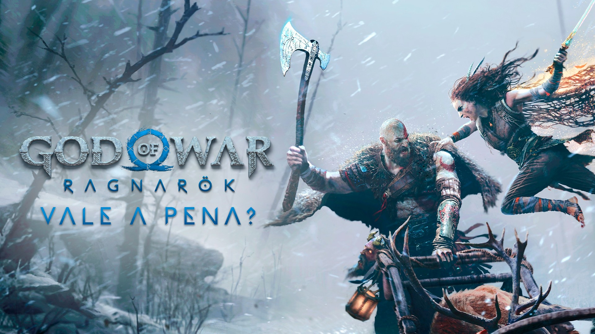
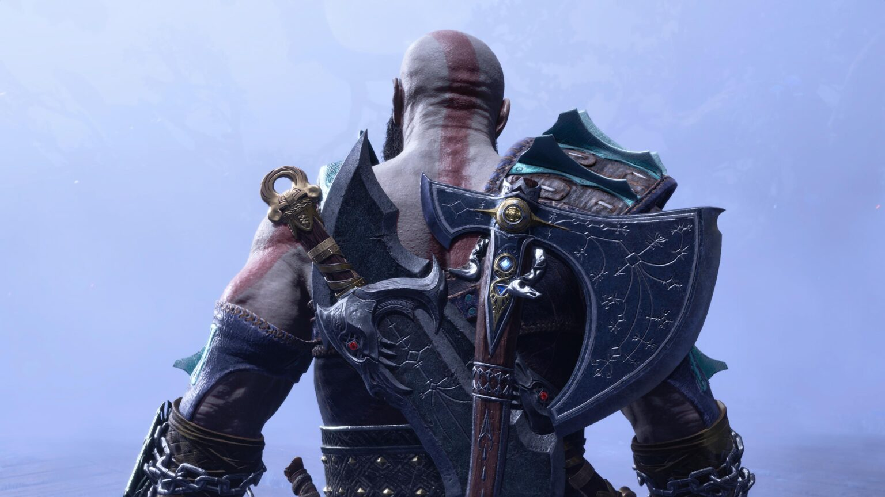
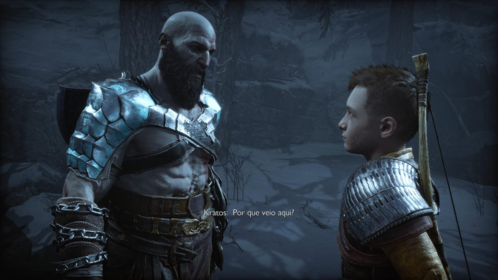

God of War Ragnarok: vale a pena?
God of War Ragnarok é maior e melhor que seu antecessor. Narrativa poderosa e um gameplay versátil são os principais destaques
Sempre tento sintetizar minha experiência com um jogo em uma única palavra. Para God of War Ragnarok, rapidamente vieram obviedades como “voraz”, “épico”, “brutal”, “sanguinário”, “supremo”… E um punhado de outros adjetivos pomposos.
Mas não era isso.
Não que ele não seja. Ele de fato é tudo isso – como já era de se esperar. Mas ainda me faltava aquela palavrinha… Um termo que eu poderia usar para categorizá-lo, colocá-lo em uma caixinha só dele. Depois de dias pensando e não encontrar nada, decidi mudar a abordagem. O que eu senti? E a resposta foi cristalina. Eu fui feliz.
É isso. Jogar God of War Ragnarok é lutar contra as horas. Seus adversários não são Thor, Heimdall, Valquírias, Freya ou mesmo o Pai de Todos. Seu inimigo é o relógio. Cada avanço do ponteiro é um misto de alegria e, curiosamente, preocupação. “Aproveite, uma hora vai acabar”, grita seu racional.
Este jogo da Santa Monica Studio é um daqueles raros projetos que só aparecem de tempos em tempos. Com uma ficção poderosa, gameplay refinadíssimo e uma duração perfeita, é um game que você precisa ter em sua biblioteca.
Entre profecias, deuses e destino
God of War Ragnarok começa com o famoso “pé na porta”. Com uma perseguição frenética, lembrando God of War III, e aquele início apoteótico contra Poseidon, e o game de 2018, quando enfrentamos “O Estranho” logo no comecinho da jornada.
A trama aposta em elementos narrativos muito bem explorados na saga, que novamente se provam bastante eficazes. Destaque para as iscas de revelações, mostrando o que eventualmente vai acontecer, mesmo antes de realmente se tornar real, e os contos interessantíssimos vindos não só de Mimir, mas de outras ótimas participações. Emoção, reviravoltas, missões paralelas ricas e muito mais. God of War entrega tudo isso.
Vale iniciar o game com um recap, que resume a aventura anterior de Kratos e Atreus até a montanha mais alta dos nove reinos, passando por lutas contra dragões, draugr e deuses. No caminho, a dupla descobriu que todo percurso deu início a algo muito maior, capaz de mudar o destino de toda a mitologia nórdica.
God of War Ragnarok começa alguns anos após os acontecimentos do seu antecessor. O plot inicial é algo como “Todo Mundo Odeia o Kratos”. Após os heróis enviarem os filhos de Thor, Freya e Odin para Valhalla, um rigoroso inverno vem castigando Midgard no que parece ser o Fimbulwinter. Atreus, um guerreiro mais experiente, busca se encontrar em tantas profecias. Já Kratos está determinado a proteger seu filho a qualquer custo. Só que o destino de ambos não é no Bosque Encantado.
Nesse comecinho, você nota uma sutil diferença. Pai e Filho estão muito mais próximos. Se antes era difícil ver o Espartano se aproximar do Garoto, agora ele aparece até colocando sua mão no ombro de Atreus, em um gesto de amor.
Foi vencida uma etapa de conexão, mas o jogo logo apresenta outro desafio mais emocional para o Fantasma de Esparta. Lidar com a sede de independência de Atreus. O dilema de pai e filho ainda é um importante ponto, só que em outra etapa das vidas de ambos.
Proteção e liberdade. É um dualismo abordado no game que, certamente, é vivenciado por muitos pais com filhos na mesma idade. Um equilíbrio importante: você quer que seu filho (a) esteja seguro, mas não pode exagerar no resguardo, o que acabaria por tornar o (a) jovem rebelde.
Entre rusgas e afagos, Kratos e Atreus vão moldando sua relação e criando laços ainda mais fortes, algo essencial para esta nova tarefa. O espartano precisa aprender a confiar mais nos instintos do seu filho e este a entender que seu pai quer o seu bem.
A história começa com uma busca pelo antigo Deus da Guerra, Týr. O jovem Atreus acredita que ele possa estar vivo e ser uma valiosa ajuda para enfrentar o fim do mundo. A premissa é simples, assim como no game de 2018, mas vai criando ramificações enormes conforme a progressão.
Algo de que o game se vale bastante é nunca deixar que os jogadores fiquem sem alguma historinha. Você entra no barco e Mimir já puxa uma resenha, seja ela um conto qualquer, uma contribuição muito relevante para a jornada ou mesmo um convite para uma exploração mais profunda. God of War Ragnarok nunca te deixa no marasmo. A sensação de continuidade é simplesmente sem precedentes. Há sempre algo a ser feito e descoberto.
Você vive um enredo profundo, do início ao fim. Cada linha de diálogo lhe oferece algo a ser digerido. De uma simples conversa sem pretensões, você acaba chegando a uma revelação impressionante sobre o passado de Mimir, por exemplo.
E se histórias são sobre pessoas, não há como não se maravilhar com os figurões. A jornada vai lhe apresentar indivíduos e criaturas complexas, cheias de mistérios. Destaque, óbvio, para os deuses.
As entidades não se resumem apenas a amigos ou inimigos. São, de fato, sujeitos emblemáticos, construídos com personalidades fortes, profundas e intrigantes. Thor é bem mais interessante do que nos trailers, que pareciam indicar um certo tipo de brutamontes sedento por sangue. Ele, é sim, forte e intimidador, mas uma figura que também combate seus próprios dilemas.
Odin, por outro lado, é um deus quase indecifrável. Manipulador, hipnótico e com um discurso doce, você se sente atraído por sua voz. Definitivamente, o Pai de Todos é uma recriação estupenda da Santa Monica. Quais são suas intenções, afinal?
E sem muitas cerimônias, as cartas são todas colocadas na mesa, e você se vê envolvido em um jogo de xadrez, vivendo situações que se desenrolam de formas bem amarradas. O ponto forte da trama é a dosagem cadenciada na entrega de revelações. Você vai se surpreender com certos desfechos e destinos.
O grande trunfo de God of War Ragnarok, no entanto, é não se prender essencialmente a personagens. Tudo faz parte de uma enorme construção de narrativa. Não há elementos que não sejam aproveitados na história, de uma arma como o Machado de Leviathan, até os cenários. Tudo está a serviço do storytelling, para contar algo.
Envolvente, amplo e muito bem dirigido, o enredo é ótimo em prender os jogadores, que sempre buscarão saber qual é o próximo passo. Quase como um vício, você não desgruda do controle até saber até onde as coisas vão. Narrativa, jogabilidade, ambientação e toda construção da experiência caminham juntas, oferecendo ao jogador uma verdadeira obra de arte em forma de polígonos.
Explorar Svartalfheim, por exemplo, é submergir nas histórias dos anões e compreender a importância dos irmãos Ulstra, que embora possam parecer apenas um alívio cômico com o humor ranzinza de Brok e a gentileza de Sindri, são peças super importantes no Ragnarok.
Andar por Vanaheim e entender um pouco como a guerra entre os Vanir e os Aesir trouxe consequências diretamente influenciáveis no desenrolar do jogo, dando ainda mais profundidade às histórias de Freya, Odin e Freyr.
Em Jotunheim, terra dos gigantes, vamos desenrolando fios que envolvem a origem e o destino de Loki. Um reino belíssimo, colorido e bastante misterioso.
E assim, reino após reino, você liga os pontos e vai construindo uma enorme teia de relacionamentos, forjando alianças – algumas bem improváveis -, conhecendo figuras, enfrentando criaturas…descobrindo. Jogar God of War Ragnarok é como tirar uma venda dos olhos e se maravilhar com as belezas do mundo.
Claro, você nota pelos trailers que o jogo parece bem bonito. E ele realmente é lindo. Desde a ambientação rica em detalhes, ornamentos e símbolos, aos detalhes excepcionais nas construções e nos adversários. Tudo é meticulosamente pensado, de um pequeno oponente ao chefão que ocupa a tela toda.
Eu quero God of War
Maior e melhor. God of War Ragnarok pega tudo que deu certo no game de 2018 e amplia significativamente, aplica muitos elementos de verticalidade e torna a jogatina mais fluida e versátil.
Kratos agora é capaz de acessar áreas mais elevadas usando as Lâminas do Caos com muita facilidade. Isso torna tudo muito mais ágil e divertido, fruto do desenvolvimento de Atreus, que antes precisava ser carregado nas costas – literalmente – e protegido em muitas situações.
Mais livre, o General Espartano pode se locomover melhor no campo de batalha e a trucidar inimigos com ataques aéreos de diversas formas, com machado, cortando suas cabeças ao meio ou as lâminas ardendo.
Um outro aspecto muito, mas muito melhor é a cooperação. Seu companheiro de luta é bem mais esperto e cheio de recursos. Atreus, consegue disparar flechas variadas, usar um escudo mágico, atordoar oponentes, criar distrações e até disparar um tipo de ataque especial que, embora não seja extremamente poderoso, é ótimo.
Tudo isso passa por um sistema robusto de armas, armaduras, habilidades e atributos. É possível personalizar quase tudo nos personagens, desde o Machado, com seus pontos de força, vitalidade e sorte, aos seus ataques rúnicos, até chegarmos as variadas Fúria Espartana, que permite seleção Cólera, Ira e Bravura. Cada qual com suas características.
O jogo se preocupa bastante em oferecer possibilidades para que seja montado um set ajustado ao estilo de gameplay de cada um. Se você prefere se arriscar mais pode usar o Escudo Destemido, excelente para Parry, e que oferece grandes recompensas, mas exige muita precisão. Ou o Escudo do Massacre, um equipamento mais eficaz para avançar com segurança contra os inimigos.
E você nota, rapidamente, que um escudo não é útil só contra investidas adversárias. Ele é vital para estratégias, principalmente para quebrar as defesas, abrindo uma janela de oportunidade de ataque, essencial para a vitória.
God of War já havia deixado o hack n slash no passado. Ainda assim, usando as Lâminas, você era bem capaz de vencer a maioria das lutas usando apenas ataques comuns, sem se preocupar com outras coisas. Em Ragnarok, é necessário ir um pouco além. Cada inimigo exige um conjunto mínimo de estratégia e resiliência. Já contra os mais fortes, é realmente fundamental entender seus pontos fracos e testar a efetividade de cada equipamento.
Para evoluir Kratos e Atreus, é necessário exploração e é aí que você entende a grandeza do game. Há muita coisa para ser feita, desde Favores – missões secundárias – à busca pelos baús de recompensas.
Ainda há o barco como meio de transporte, mas em reinos como Midgard você vai de trenó, que é muito mais rápido, permitindo estacionar em qualquer lugar e caminhar livremente. Ainda que não seja de mundo aberto, há uma clara sensação de sandbox, com muitos lugares para visitar.
E como é recompensador visitar cada cantinho dos reinos! Nos baús mais raros – aqueles que você tem que liberar os selos – você vai encontrar itens para ampliar seus níveis de saúde. Em outros, objetos necessários para que os anões consigam confeccionar melhores equipamentos, os preparando para desafios mais complicados.
Mas quando começa a ação é que o jogo brilha de verdade. Há mais opções de finalização, inimigos muito variados, combinações ainda melhores e uma ótima quantidade de habilidades a serem aprendidas. Kratos e Atreus contam com três árvores de talentos para cada arma, onde você distribui os pontos e libera novos ataques.
Outras adições interessantes são a capacidade de potencializar o ataque do Machado e das Lâminas. Combinando estas novidades com ataques rúnicos pesados + ajuda com companheiro, você assiste uma verdadeira carnificina.
Junte tudo isso, com mais mini chefes, mais inimigos, segredos para descobrir, conhecimento para absorver, diversas secundárias ótimas, que não estão no jogo só para encher linguiça, mas realmente para complementar a narrativa e desafios… Pronto! Você tem uma saborosa experiência de gameplay.
E pra quem gosta de desafios, há muitos deles. Destaque para os Berserkers, guerreiros super poderosos no estilo das Valquírias. Falando nelas, há uma nova Rainha no pedaço e caberá a você derrotá-la. Está pronto?
Por fim, o tempo de gameplay. God of War Ragnarok é grande. Minha jogatina foi de 40 horas até a conclusão da narrativa. Ficaram pelo caminho por volta de 15 Favores – missões secundárias – regiões para se explorar, os Corvos de Odin, tesouros, muitos artefatos, trabalhos, armaduras para confeccionar (só com as mais poderosas para se ter uma chance de vitória contra a Rainha das Valquírias) e mais.
Em resumo: serão necessárias por volta de 50 a 60 horas para se completar tudo, a depender do ritmo de cada um.
Desempenho dos deuses
Os donos de um PlayStation 4 não devem se preocupar. O jogo está rodando super bem no console de oitava geração. Os gráficos estão ligeiramente melhorados – quando comparamos com a versão de 2018 – e o desempenho está ótimo, correspondendo ao que se espera dele.
Jogamos por boas horas em um modelo “padrão” de 2015 e tudo funcionou tranquilamente. Claro, você nota que o videogame está no seu extremo limite e uma boa limpeza pode ser uma aliada para evitar que o PS4 decole.
Os pontos de ressalva são os mesmos de God of War. Os tempos de loading são demorados e o framerate é travado em 30 FPS. Este último, nem tanto, mas se você estiver acostumado com 60 FPS, pode sentir um desconforto até seus olhos se acostumarem novamente.
Já no PlayStation 5, as coisas realmente impressionam. Os gráficos estão lindos, entre os mais bonitos do videogame, e a maneira de aproveitar o DualSense e o áudio 3D fazem uma bela diferença. Além disso, a fluidez é sem igual. Tudo acontece naturalmente, em lindos ambientes e com jogabilidade de alto nível.
GOTY of WAR
É GOTY? Quando você avalia um jogo, não há nenhuma pretensão em dar um veredito afirmando que ele vai vencer o famoso “Jogo do Ano”. Seria preciosismo e até, de certa forma, clubismo.
God of War Ragnarok até tem seus pequenos defeitinhos. Acessar o mapa não é lá muito intuitivo, por exemplo. Além disso, o mesmo botão que faz aquele giro rápido em 180º é o responsável por trocar de arma. Isso acaba gerando situações ambíguas às vezes. Na mesma linha, o mesmo botão que faz finalização brutal (R3) é o que trava a mira nos adversários.
A narrativa, ainda que seja ótima, poderia oferecer mais lutas épicas contra os deuses Aesir (algo que o jogo de 2018 também deixou a desejar) e também deixa algumas pontas soltas – mas que devem ser propositais.
Só que isso são pequenos detalhes. E como o jogo vai chegar às mãos dos jogadores já com alguns pacotes de correções, talvez até alguns dos probleminhas citados até sejam ajustados até lá.
O que podemos afirmar é que God of War Ragnarok é uma obra suprema dos videogames. História incrível e cheia de reviravoltas, inimigos emblemáticos, batalhas contra os chefes de tirar o fôlego, nível de dificuldade bem ajustado, exploração, dublagem e localização para o Brasil nota 10 e muito mais qualidades.
Parabéns, Santa Monica, e obrigado por mais uma aventura épica com o nosso malvado (que não está mais tão malvado assim) favorito.
Fonte:MeuPlastation